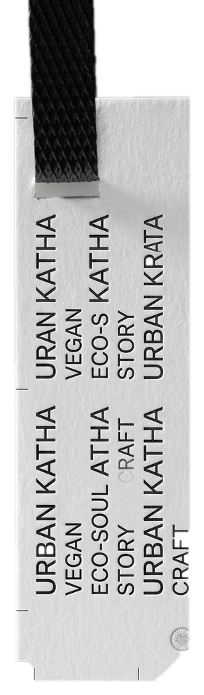

CREATIONPremium Packaging · Mumbai · Est. 2007
Fashion and fragrance packaging for brands that care about the detail. Rigid boxes, woven labels, hang tags — all finished in-house. Delivered to your door.
Request a sample kit →In-house finishing
Gold · Silver · Rose Gold
Raised — any depth
Pressed impression
Spot UV · Full UV
Velvet matte laminate